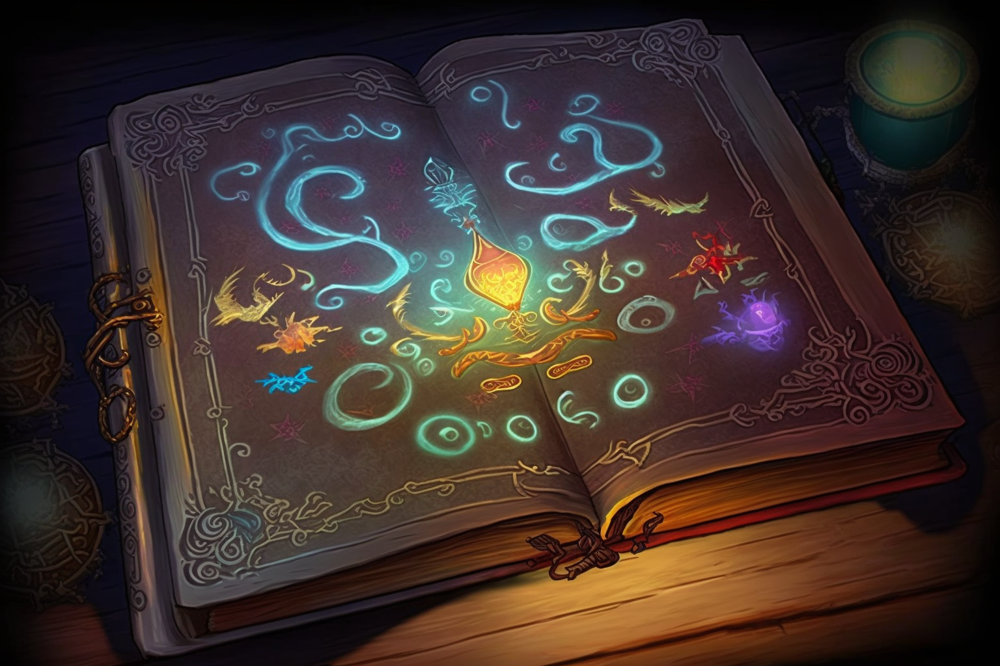

Bem-vindo a "Crônicas de Elladan: O Grimório Perdido", um livro-jogo emocionante que coloca você no centro da ação. Aqui, você será o herói da história, tomando decisões importantes e enfrentando perigos mortais. Mas tenha cuidado, pois suas escolhas podem levar à morte do personagem principal e alterar o curso da história.
O mundo em que você se encontra é repleto de criaturas perigosas, organizações ocultas e mistérios antigos. O reino de Arden proíbe a magia e caça qualquer um que ousar praticá-la, mas o povo comum não sabe o motivo dessa proibição. Os homens do rei estão sempre em busca de pessoas que fazem magia, então tenha cuidado com quem você confia.
Neste livro-jogo, você acompanhará a história de Elladan, um garoto de 15 anos que viveu toda a sua vida com o pai em um local isolado de outras cidades. Ele sempre foi obediente e ajudava o pai nos afazeres diários, mas sempre teve uma curiosidade inquieta para conhecer o mundo e se aventurar. Seu pai é um homem sério e preocupado com a segurança da família, por isso sempre ensinou Elladan a ser cauteloso e a não se meter em encrencas. Mesmo assim, o jovem sempre sonhou em descobrir o mundo além do que conhecia.
Cabe a você decidir as ações que Elladan irá tomar para seguir em frente. Suas escolhas afetarão o curso da história e o destino de Elladan e sua família. Divirta-se e boa sorte em sua jornada! A história deste livro-jogo foi preparado com muito carinho utilizando ChatGPT e com ilustrações utilizando o Midjourney.
